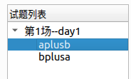
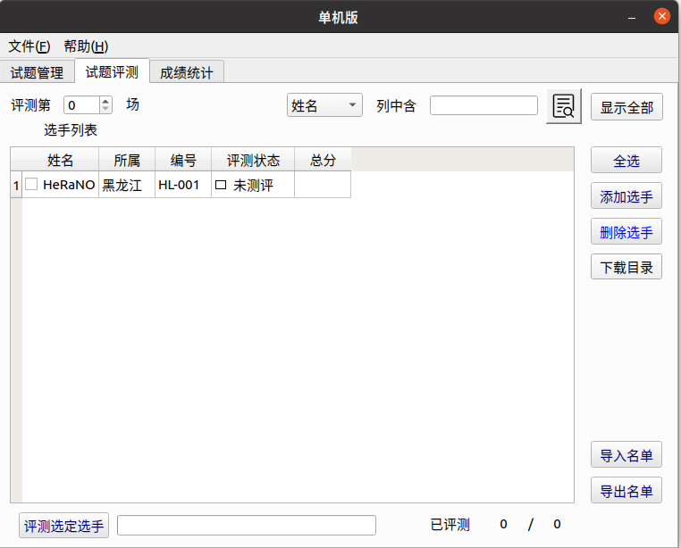

Arbiter
Arbiter¶
Arbiter 为北京航空航天大学为 NOI Linux 开发的评测工具，现已用于各大 NOI 系列程序设计竞赛的评测。据吕凯风在 2016 年冬令营上的讲稿《下一代测评系统》，Arbiter 是由北京航空航天大学的团队（GAIT）在尹宝林老师的带领下开发完成的。
在 NOI Linux 更新到 2.0 版本后，Arbiter 也用 Qt 5.12.8 重新编译，并发布为 Arbiter 2.0。因为之后的测评环境均使用 NOI Linux 2.0，因此以下介绍使用的 Arbiter 版本均为 NOI Linux 2.0 中自带的 Arbiter 2.0。
此测评软件仅能在 NOI Linux 下找到。二进制文件位置为 /usr/local/arbiter/local/arbiter_local。
使用方法¶
配置程序¶
配置选手源程序文件夹和选手名单。选手文件夹如 NOIP 格式创建：
1 2 3 4 5 6 7 8 9 10 11 12 13 14 15 16 17 18 19 20 21 22 23 24 25 26 27 28 | |
其中，day<x> 中的 <x> 是场次编号，<contestant_x's ID> 指的是选手编号，形如 <省份>-<编号>，例如 HL-001，JL-125 等等；<problem_x> 指的是题目名称。在自测时可以使用字母、短线（即 -）和数字的组合作为选手编号。
选手名单格式如下：
1 2 3 | |
其中，<contestant_x's name> 表示选手姓名。保存这个文件为纯文本文件或 csv 文件，可以使用 UTF-8 编码。
选手名单也可以在启动 Arbiter 后手动添加。
接下来配置测试数据。每组数据的命名格式如下：
1 | |
其中，<y> 是数据编号，编号从 1 开始。默认测试数据后缀名是 .ans，选手输出的后缀名是 .out，不能混淆。
不用将每题的测试数据放置在各题的文件夹里，只需要放在一起即可。
然后开始测评文件夹的配置。
左下角“显示应用程序”-“全部”-“Arbiter_local”，启动 Arbiter。

点击 OPEN 可以打开已经建立的比赛，之后需选择对应比赛文件夹下的 setup.cfg 文件；点击 NEW 可以新建一个竞赛，并设置名称和比赛目录。注意，需要在用户 主目录下 新建一个文件夹，然后选择其为比赛目录，如果在桌面上建立比赛目录的话无法测评。出现这种问题很有可能是因为比赛文件夹路径中不能包含中文。

在左边试题概要里“右键”-“添加考试”，再在考试标签上“右键”-“添加试题”，新建出试题即可。
单击考试左边的向下箭头即可全部显示，单击试题标签对试题名称进行修改，改为题目的英文名称，同时修改题目时间与空间限制和比较方式。比较方式十分不推荐用“全文完全直接比较”，对于 Windows 下制作的数据十分不友好。可以根据题目自主选择比较器，但是需要注意必须选择一个比较器，否则测评结果将是 No Score.。

点击“文件”-“保存”。该操作不可省略，否则程序将不会生成题目配置文件。注意每一次对题目配置的修改都要保存。
此时，打开考试文件夹，会发现有如下内容。
1 2 3 4 5 6 7 8 9 10 11 12 13 14 | |
filter 文件夹放置了一些比较器；result 文件夹存放选手的测评结果；tmp 文件夹是测评时的缓存文件夹。其中 day<x>.info 为场次配置文件，<x> 为场次编号；task<x>_<y>.info 文件为题目配置文件，<x> 为场次编号，<y> 为题目序号。
把已经建好的选手程序文件夹放在 players/ 目录下，注意最外层应按照考试日建立相应的 day<x> 文件夹。将所有测试数据（不放在文件夹里）放在 evaldata 中。
正式测评¶
点开“试题评测”标签，会出现如下页面：

如果选手名单已经建立了，直接选择右边的“导入名单”进行导入。如果人数较少，可以选择右边的“添加选手”进行导入。
导入后的页面如图。

示例中的编号是 HL-001，程序会自动识别出“所属”一栏。如果不是 NOIP 规范的编号是识别不出来的。
把测评第 0 场变为测评第 1 场（或者其他场次）。然后选择右边的全选（或选择指定的选手），再选择下面的评测选定选手，选择要测评的题目（或全部试题），最后等待测评结束即可。
测试点详细信息需要在 result 文件夹下查看，文件夹下会有选手的结果文件夹，结果文件的后缀名为 .result，用纯文本方式查看即可。如果出现 No score file. 的错误，可以检查测评时是否生成了 /tmp/_eval.score 文件。
自定义校验器的编写¶
反编译其他校验器，可以知道运行自定义校验器的命令是 <problem>_e <in> <out> <ans>。后三个参数分别代表输入，选手输出和答案文件。最终的评分结果需写入 /tmp/_eval.score 文件中，第一行是测评信息，第二行是分数，10 分为满分。
编译后自定义校验器的名称必须为 <problem>_e，其中 <problem> 为题目名称。在配置题目时选择自定义校验器，然后选择需要的自定义校验器即可。
在试题管理中题目配置的地方将提交方式由源代码改为答案文件，然后选择自定义校验器，可以测试提交答案题。
注意事项¶
- 据说很容易死机。
- 据说大量测评时移动鼠标会导致死机。
- 据说不定时闪退，和 Anjuta 一样，需要注意。
- 据说配置时需要注意权限问题（但是我并未遇到）。
- 由于 Linux 运行时栈限制，如果要开无限栈，应在终端先输入
ulimit -s unlimited后执行arbiter_local打开测评器。 - ……
漏洞¶
由于长期缺乏维护，系统存在一些漏洞，如可以使用 #pragma G++ optimize("O2") 和 __attribute__((__optimize__("-O2"))) 等。
评价¶
Arbiter 1.0.2 在开发完成后就一直没有实质性更新，导致测评体验极差，UI 脱离现代审美。在 NOI Linux 1.4.1 中，它和 NOI Linux 自带的 GUIDE 一样沦为选手与教练疯狂吐槽的对象。在 NOI Linux 2.0 中，除了比较器移除了源代码和软件整体使用 Qt 5 重新编译外，并没有很大的变化，一些稳定性问题仍未得到解决。
build本页面最近更新：，更新历史
edit发现错误？想一起完善？ 在 GitHub 上编辑此页！
people本页面贡献者：Ir1d, HeRaNO, NachtgeistW, i-Yirannn, bear-good, ranwen, CoelacanthusHex, billchenchina, Tiger3018, Xeonacid
copyright本页面的全部内容在 CC BY-SA 4.0 和 SATA 协议之条款下提供，附加条款亦可能应用